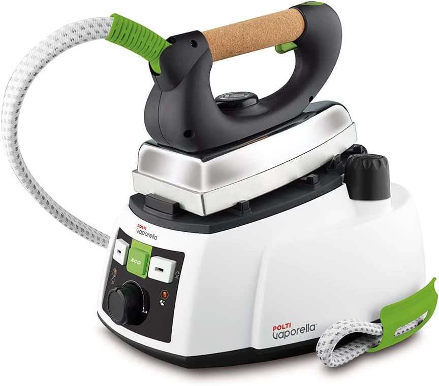
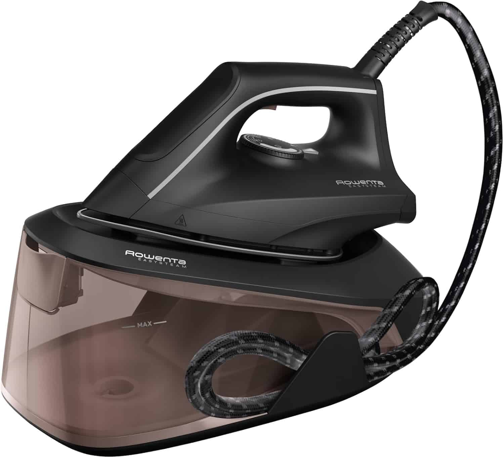
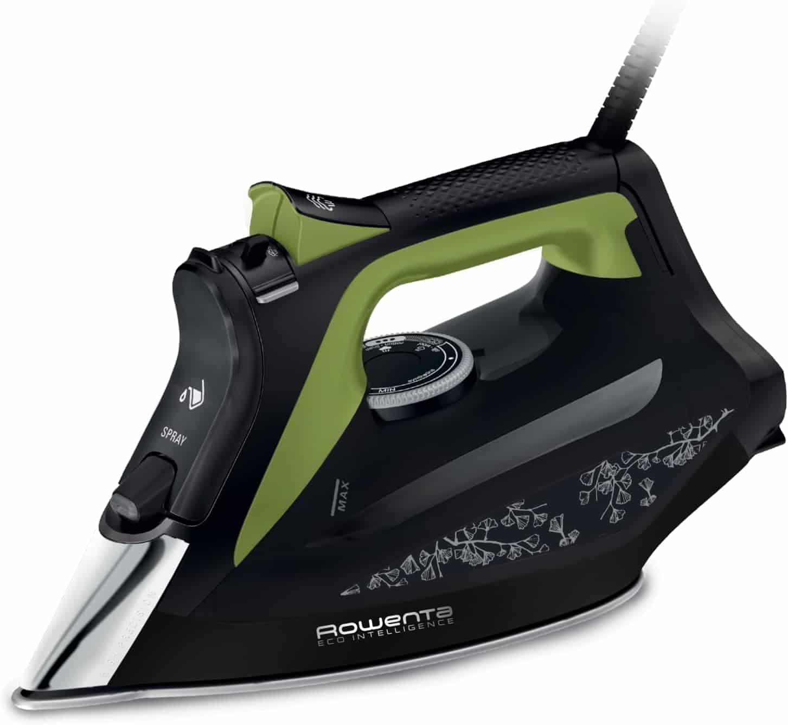
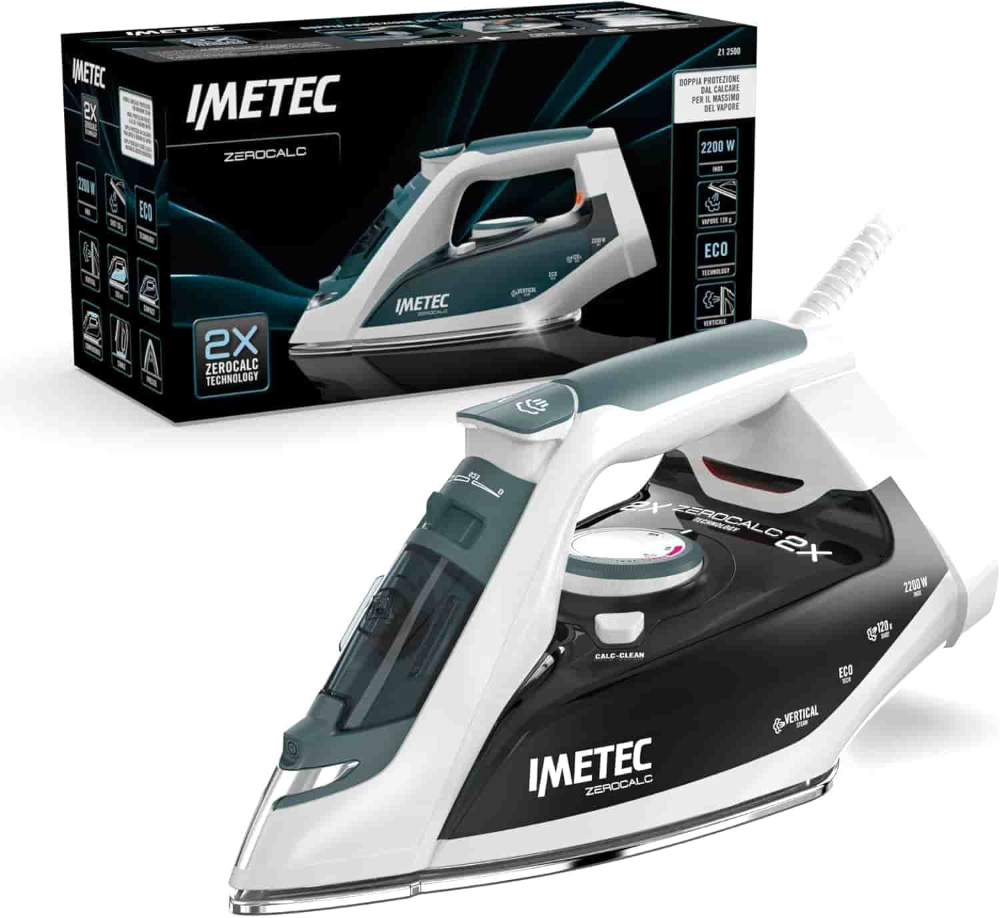
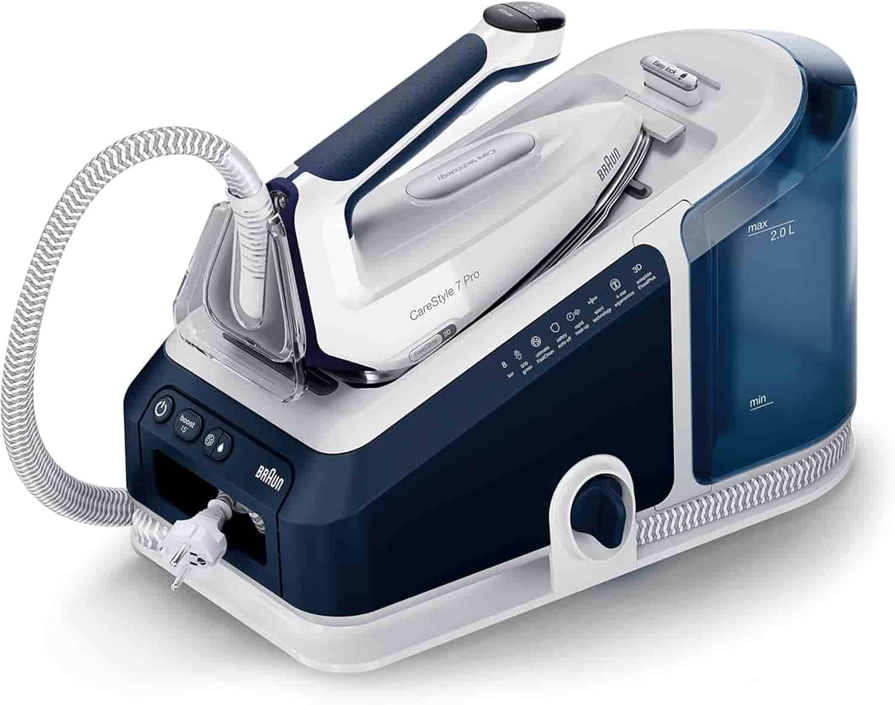
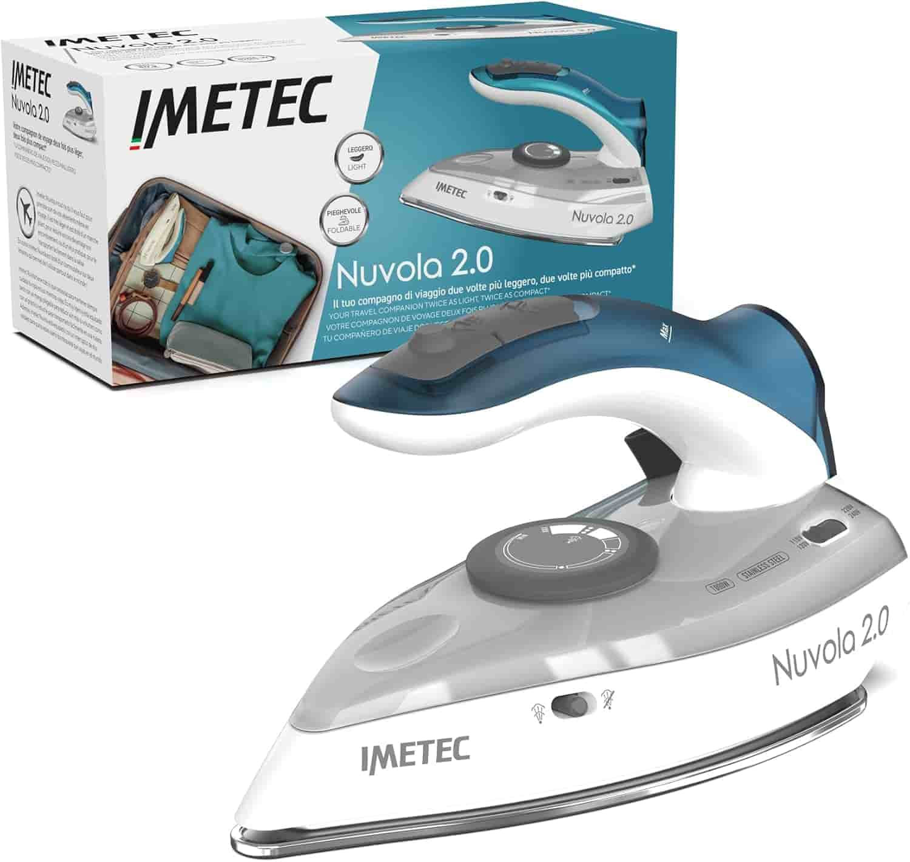

Districarsi tra getti di vapore, caldaie in pressione e piastre in ceramica può essere più faticoso che affrontare una montagna di camicie stropicciate. Non tutti abbiamo le Buddhist esigenze: c'è chi cerca la perfezione professionale e chi vuole solo un dispositivo rapido ed economico per le emergenze dell'ultimo minuto. In questa guida abbiamo selezionato e testato i migliori ferri da stiro attualmente sul mercato, classificandoli per categoria: dal modello definitivo per prestazioni, al miglior rapporto qualità-prezzo, fino alle opzioni più accessibili senza rinunciare alla qualità. Trova il compagno di pieghe perfetto per te.

Il Più Amato con Caldaia - Polti Vaporella 535 Eco Pro
Il Polti Vaporella 535 Eco Pro è un sistema stirante a caldaia ad alta pressione da 4 bar. Dotato di una piastra professionale in alluminio, garantisce una distribuzione del calore uniforme. La funzione ECO permette di risparmiare fino al 25% di acqua e il 10% di energia elettrica. Il manico in sughero traspirante assicura una presa comoda e confortevole durante l'utilizzo prolungato. Le recensioni positive degli utenti confermano l'affidabilità storica del marchio e la qualità dei materiali. I clienti apprezzano particolarmente la potenza del vapore, capace di eliminare le pieghe più ostinate. Molti utenti sottolineano l'ottimo rapporto qualità-prezzo e la facilità d'uso quotidiano del dispositivo. Il tappo di sicurezza brevettato impedisce l'apertura accidentale se è presente pressione residua. Il design compatto lo rende ideale per chi cerca prestazioni professionali in spazi ridotti. È considerato uno dei modelli più amati per la sua robustezza e la stiratura veloce ed efficiente.
Vedi su Amazon
Miglior Qualità Prezzo - Rowenta Easy Steam VR5120
Il Rowenta Easy Steam VR5120 è un ferro con generatore di vapore progettato per una stiratura veloce ed efficiente. Grazie a una pressione di 5,4 bar e un colpo vapore da 210 g/min, elimina facilmente anche le pieghe più ostinate. Il serbatoio da 1,4 litri permette sessioni prolungate senza interruzioni, ideale per chi ha grandi carichi di bucato. La piastra in acciaio inossidabile garantisce una scorrevolezza ottimale e una distribuzione uniforme del calore. Le recensioni positive degli utenti sottolineano la maneggevolezza e il design compatto che occupa poco spazio. Molti clienti apprezzano il riscaldamento rapido in soli 2 minuti, risparmiando tempo prezioso ogni giorno. La funzione Eco è molto lodata per la riduzione dei consumi energetici senza sacrificare la potenza del vapore. Il sistema anticalcare incluso assicura una manutenzione semplice e una maggiore durata del prodotto nel tempo. Viene spesso descritto come un product dal rapporto qualità-prezzo imbattibile per l'uso domestico quotidiano. Un acquisto consigliato per chi cerca l'efficienza Rowenta con un'interfaccia semplice e intuitiva.
Vedi su Amazon
Miglior Qualità Prezzo senza caldaia - Rowenta DW6330D1 Eco Intelligence
Il Rowenta DW6330D1 Eco Intelligence è la soluzione ideale per chi cerca prestazioni professionali senza l'ingombro della caldaia. Grazie alla sua potenza da 2500W e alla piastra Microsteam 400 HD 3De Laser, garantisce una distribuzione del vapore impeccabile e una scorrevolezza superiore su ogni tessuto. La tecnologia Eco Intelligence permette di risparmiare fino al 30% di energia, mantenendo un'efficacia di stiratura altissima. Le recensioni positive degli utenti sottolineano l'eccezionale precisione della punta profilata, perfetta per colletti e cuciture difficili. Molti acquirenti lodano la funzione antigoccia, che evita macchie d'acqua sui capi anche a basse temperature. Viene inoltre apprezzata la robustezza dei materiali e il design ecologico realizzato con plastica riciclata. Il potente colpo vapore da 180 g/min permette di eliminare anche le pieghe più ostinate con una sola passata. La funzione di vapore verticale è perfetta per rinfrescare rapidamente abiti appesi o tende. Chi lo utilizza conferma che si tratta di un prodotto dal rapporto qualità-prezzo imbattibile per la cura quotidiana dei capi. Scegliere questo modello significa unire efficienza energetica, potenza e praticità in un unico dispositivo compatto.
Vedi su Amazon
Il Più Economico - Imetec ZeroCalc Z1 2500
L'Imetec ZeroCalc Z1 2500 è la soluzione ideale per chi cerca un ferro da stiro efficace al minor prezzo possibile. Dotato di una potenza da 2200W, questo modello assicura un riscaldamento rapido e una stiratura fluida su ogni tessuto. La piastra in acciaio Inox multiforo garantisce un'ottima diffusione del calore, rendendo il lavoro veloce e senza intoppi. La tecnologia 2X ZeroCalc protegge il dispositivo dal calcare, allungandone la vita e mantenendo alte le prestazioni nel tempo. Con un colpo di vapore da 120g, anche le pieghe più ostinate spariscono con una sola passata, risparmiando tempo prezioso. Le recensioni positive degli utenti lodano costantemente l'ottimo rapporto qualità-prezzo e la sua estrema leggerezza. Molti clienti apprezzano la maneggevolezza del ferro, definendolo perfetto per le sessioni di stiratura quotidiane meno impegnative. La funzione Eco integrata permette inoltre di ridurre i consumi energetici senza sacrificare la qualità del vapore erogato. È particolarmente apprezzato dai consumatori per la sua semplicità d'uso, risultando intuitivo e pronto all'uso in pochi istanti. In sintesi, l'Imetec ZeroCalc Z1 2500 è il miglior acquisto economico per chi desidera affidabilità e risultati impeccabili.
Vedi su Amazon
Il Professionista senza compromessi - Braun CareStyle 7 Pro
Il Braun CareStyle 7 Pro è il sistema stirante più potente di Braun, progettato per risultati professionali. Grazie alla tecnologia PowerSteam, offre un vapore continuo fino a 190 g/min per eliminare ogni piega. È il primo ferro al mondo con certificazione ergonomica, studiato per ridurre lo stress del polso. La piastra FreeGlide 3D permette di scivolare a 360° anche all'indietro sopra bottoni e tasche. Le recensioni degli utenti confermano l'eccezionale maneggevolezza e la leggerezza del ferro durante l'uso. Molti clienti apprezzano il capiente serbatoio da 2 litri, perfetto per lunghe sessioni senza interruzioni. La tecnologia iCare protegge i tuoi capi impostando automaticamente la temperatura ideale per ogni tessuto. Le opinioni positive sottolineano inoltre l'efficacia del colpo vapore da 600g against le pieghe ostinate. Un prodotto affidabile e robusto, lodato per la qualità costruttiva e la velocità di riscaldamento. Scegliere questo modello significa investire in efficienza e comfort per la cura quotidiana dei tuoi capi.
Vedi su Amazon
Per i Viaggiatori - Imetec Nuvola 2.0
L'Imetec Nuvola 2.0 è il compagno ideale per chi desidera capi impeccabili anche lontano da casa. Grazie al suo design compatto e al manico pieghevole, occupa pochissimo spazio in valigia. Il sistema a doppio voltaggio (110-120V / 220-240V) permette di utilizzarlo in tutto il mondo senza problemi. Nonostante le dimensioni ridotte, offre una potenza di 1000 W e un efficace colpo di vapore da 80g. La piastra in acciaio inox garantisce una scorrevolezza ottimale su ogni tipo di tessuto. Le recensioni positive confermano la sua grande affidabilità e la rapidità nel raggiungere la temperatura. Gli utenti apprezzano particolarmente la leggerezza (solo 560g) e la praticità della custodia inclusa. Molti acquirenti lo consigliano per la sua capacità di rimuovere le pieghe più ostinate con estrema facilità. È considerato uno dei migliori ferri da viaggio per il rapporto qualità-prezzo imbattibile. Un prodotto indispensabile per chi viaggia spesso per lavoro o per piacere.
Vedi su Amazon